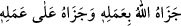
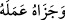
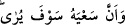
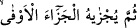
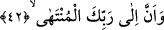

“Sonra ona” sa’yinin, amelinin “karşılığı tastamam verilecektir.”
Bu cezâ fiili, iki türlü kullanılır:
1. (
) yâni “Allah onun ameline karşılık verdi”.
2. Harf-i cerrin hazfi ve fiilin mef’ûlüne yaklaştırılmasıyla olur. Bu da (__WORD__)
“Onu ameli sebebiyle mükafâtlandırdı” şeklindedir.
“Tastamam…” Yâni en bol ve en tam karşılığı verilecek. En küçük bir hayrı varsa
hayırla, şerri varsa şer ile karşılığını alacaktır. Buradaki kelimesi cezânın nev’ini beyân
için gelmiş olan mef’ûlü mutlaktır.
Verrâk der ki: “Bu âyet-i kerîme, kulun sülûk yoluna başladığı anki durumu
devamındaki, (__WORD__) sülukun ortasındaki hâlini ve (__WORD__) kısmı
ise sülûkün nihâyetini ifâde için getirilmiştir. Sâlik için fenâ ve bakâ itibariyle iki
nihâyet vardır: Sâlik fenâdaki nihâyette şühûd anlamındaki cezâyı elde eder. Bakâdaki
nihâyette ise bedeninin ve varlığının terbiyesi mahiyetindeki cezâya kavuşur. Bunları
elde edebilmesinin yolu, sâlikin sülûkünun başlangıcı sırasında yeme-içme, giyinme,
evlenme ile dünya mâsiyetleri ve bu mâsiyetlerin yollarında zengin kılınma gibi meşrû
ve mubah hususları terk husûsundaki âzami vefâsıdır. İşte bu nedenle sâlikin vahdet
âleminde iken yeniden kesret âleminin vasfına dönmesi artık çok uzak olmuştur. Şâyet
dönmüş olsa bile asla kesret ona bir zarar veremez.
42. Ve şüphesiz en son varış Rabbinedir.
“Müntehâ” kelimesi “intihâ” mânâsında mimli masdardır. Âyetin mânâsı şudur:
“Mahlukatın öldükten sonra münferiden ve müştereken rücû edip varacakları makam
bizzat Allah Teâlâ olacaktır ve O, mahlukatı amellerine göre cezâlandıracaktır.”
Hakikatte mahlûkatın Allah’a varmaları hem bidâyet-i sülukte ve hem de nihâyet-i
sülukte tahakkuk etmektedir. “Dikkat ediniz! Her iş Allah’a rücû’ eder.” Çünkü
O’ndan başka İlah yoktur. Mesnevî’de der ki:
El üstünde bir el vardır bu böyle nereye kadar?
Her şeyin son bulduğu Allah’a kadar
O dipsiz ve bucaksız bir denizdir
Bütün denizler onun yanında bir sel gibidir.
Hileler ve çâreler ejderha bile olsa
“İllâllah” karşısında hepsi de “lâ”/yok hükmündedir.
İbn Ata şöyle der: “Kimin bidâyeti Hakk’tan olursa nihâyeti de O’na olur. Kul,